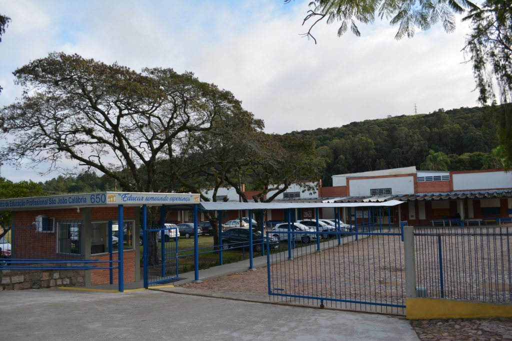

São João Calábria
(1873-1954)
João Calábria nasceu em Verona/IT, no dia 8 de outubro de 1873; sétimo e último filho de Luís Calábria, sapateiro, e de Ângela Foschio, dona de casa e mulher de grande fé.
Hístoria Do Calabria
O Centro de Educação Profissional São João Calábria, atuando em Porto Alegre desde 1962, é um espaço de acolhimento, proteção e interrelações humanas em prol da inclusão social, voltado ao atendimento de crianças, adolescentes, jovens e idosos em situação de vulnerabilidade. Estimula o desenvolvimento integral das pessoas com vistas ao ingresso ao mundo do trabalho, à inclusão social e à convivência familiar e comunitária.
O marco inspirador da Obra Calabriana ocorreu em uma noite do rigoroso inverno europeu, no ano de 1897, quando um menino pediu abrigo na casa da família de João Calábria. Foi o início de sua obra dedicada aos mais necessitados. O ano de 1961 marca a chegada dos Pobres Servos da Divina Providência ao Brasil, mais precisamente em Porto Alegre no Rio Grande do Sul. Em pouco tempo, estavam em funcionamento o ensino fundamental e a profissionalização, alternados nos turnos manhã e tarde. Os dois primeiros cursos criados foram Artes Gráficas e Tornearia Mecânica, em 1966. Mais recentemente em 2020, o CPIJ, Calábria e Educação Infantil formam a Rede Calábria com o objetivo de otimizar propostas de gestão e comunicação.
Curso Assistente Administrativo
O Curso busca formar profissionais que atendam os processos administrativos de uma organização conforme suas políticas, princípios, valores e estratégias, de forma a alcançar seus objetivos e suas metas. Ao final do curso, o aluno obterá formação profissional, conhecimentos e habilidades básicas e específicas, que foram desenvolvidas ao longo do processo de ensino-aprendizagem através de metodologias atualizadas, que estimularam à construção do conhecimento e à interação entre sujeitos e mundo relacional, virtual e tecnológico.